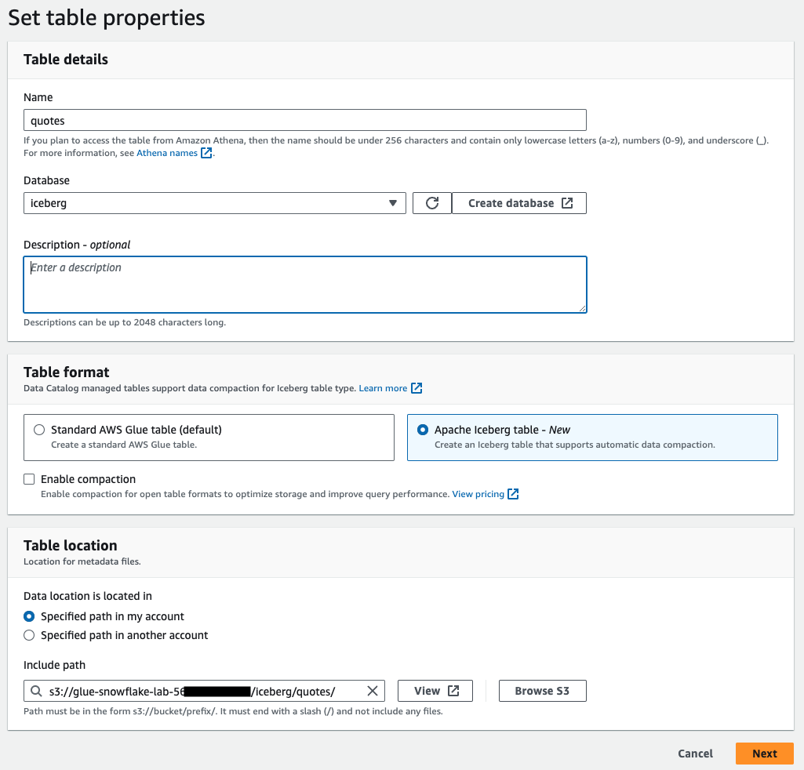
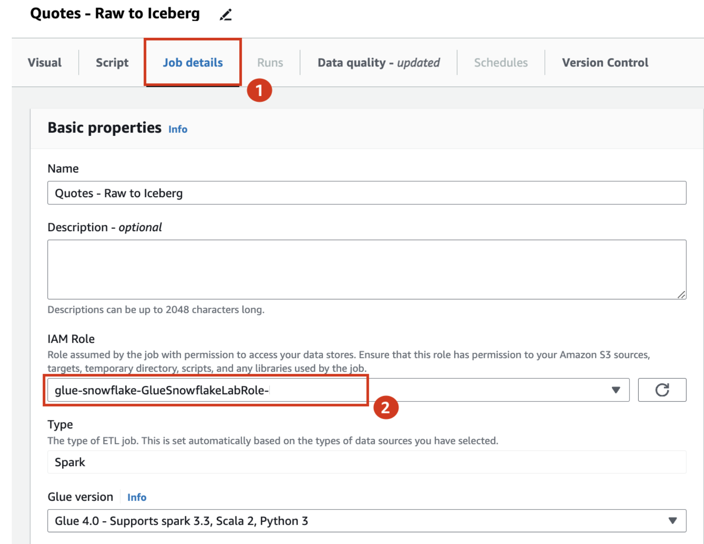
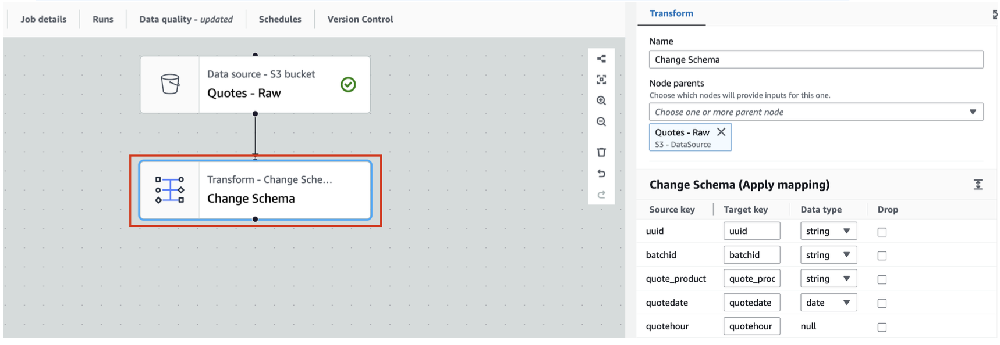
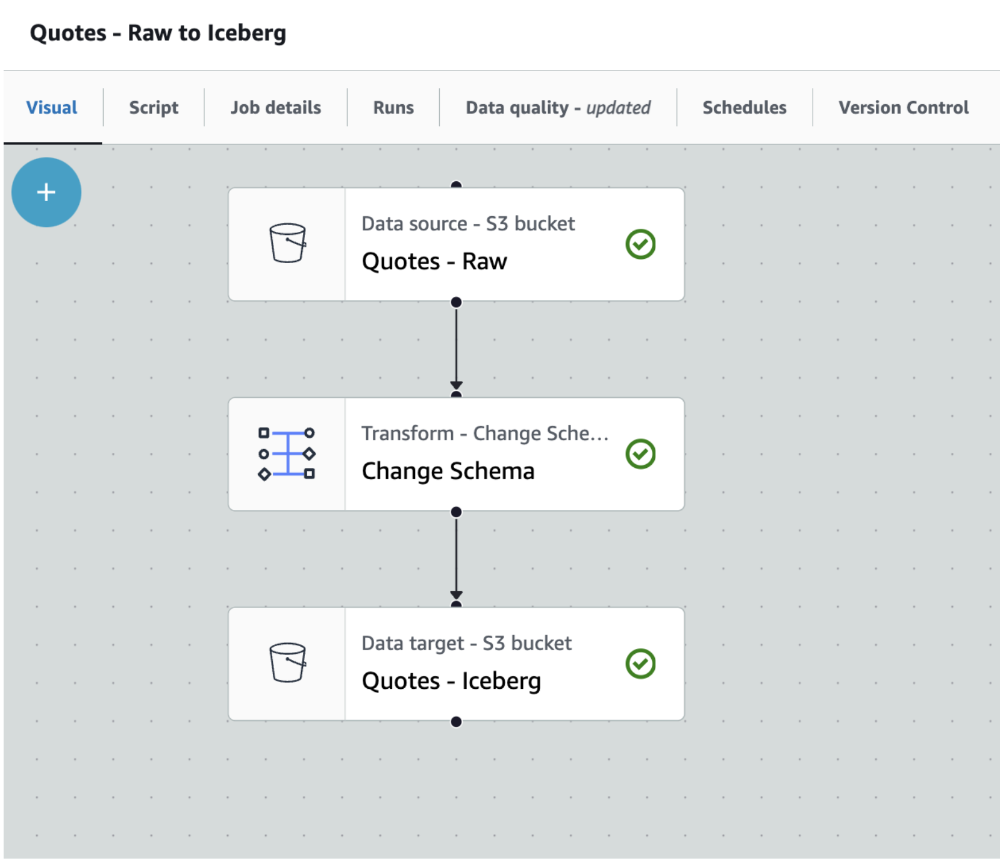
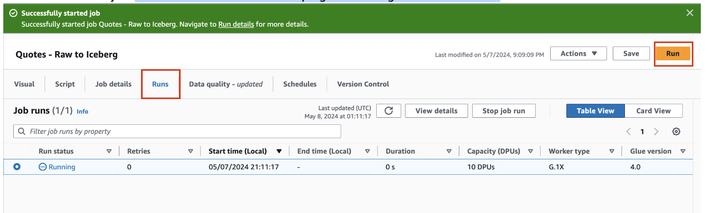
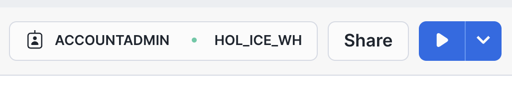

Apache Iceberg is an open table format for huge analytical datasets that enables high performance analytics on open data formats with ACID compliance. Snowflake and AWS both support Iceberg format that enables customers to drastically improve data interoperability, speed of implmentation and peformance for integrated data lakes.
This guide will take you through the steps of converting existing parquet data to Iceberg and using it to build open analytic environments using Snowflake and AWS Glue.

For this guide we will use a Financial Services use case where Insurance data is analyzed. The Quotes data is collected from systems and stored as parquet on S3, while Customer and Policy data is already available as internal Snowflake tables. We will try and identify customers who are likely to churn or potential fraud with a high number of recent quote requests.
Prerequisites
- Familiarity with Snowflake, basic SQL, Snowsight UI and Snowflake Objects
- Familiarity with AWS Services (S3, Glue, CloudFormation, IAM) and the Management Console
- Basic knowledge of Python
What You'll Learn
- How to create an Iceberg table in the Glue Data Catalog and convert parquet data on S3 in place(no rewrite) to Iceberg format
- How to configure a Snowflake External Volume with S3
- How to configure a Snowflake External Catalog with the Glue Data Catalog
- How to create Snowflake Managed and Unmanaged Iceberg Tables
What You'll Need
- A Snowflake Enterprise Account with
ACCOUNTADMINaccess in US WEST (OREGON REGION) - An AWS Account with
Administartor Access
What You'll Build
- A Glue Database with Iceberg table on S3
- Integrations between Snowflake and AWS for External Volume and External Catalog
- Snowflake Managed and Unmanaged Iceberg tables
In this step we will use CloudFormation to configure objects in the AWS account needed for the quickstart, we will also cover basics of the AWS console and how to leverage browser tabs to multi task with various AWS services.
- Start by logging into your AWS Console.
- Once logged in to the AWS Console look for the AWS Region in the top right hand corner and select the US West (Oregon) us-west-2 region.

We will now run a CloudFormation Template to configure a S3 bucket and Role with specific Policies in the AWS account.
- In the top left menu bar enter Cloudformation in the Search bar, then select the CloudFormation service from the dropdown list.

- Once in the CLoudFormation screen verify the AWS Region that it is the US West (Oregon) us-west-2 region.
- It is recommended to duplicate the browser tab 3 times to make it simple to use multiple AWS services in the same browser session.
- You can now create a CloudFormtion Stack. You can click the Create stack button, or if it is not visible click on the 3 Horizontal bars top left corner and then select Stacks to see the Create stack button.
- Once you are in the Create stack screen select the following options:
- Prepare template > Choose an existing template
- Template source > Amazon S3 URL
- Then copy the CloudFormation Template URL below into the Amazon S3 URL box.

- Click Next
- On the next screen Specify stack details enter a name for the stack in Stack name, in this case you can use
glue-snowflakethen click Next - The following screen Configure stack options simply click Next
- On the last screen Review and create scroll down to the bottom and select the check box next to
I acknowledge that AWS CloudFormation might create IAM resources.and then click Submit to create the stack.
It will take a few seconds to create the resources in your AWS account. In the Events screen you can click the refresh button to see updates.
- Once complete click on the Outputs Tab in the center top. This will display the Role name and S3 bucket name that was created. These will be used later to configure the integrations with Snowflake.

In this step we will use AWS Glue to create an icebrg table and convert parquet data to iceberg format. Glue Studio will be used.
- In one of the browser tabs with the AWS console type S3 in the search bar and select S3. This will allow you to quickly see what data and folders are created in S3. Verify the AWS Region in the S3 screen.
Create Glue Database
- In the next browser tab type Glue and then select AWS Glue.
- Once in the AWS Glue screen verify the AWS Region that it is the US West (Oregon) us-west-2 region.
- In the left navigation pane, under Data Catalog, click Databases .
- Click Add database in the window on the right hand side pane.

- On Create a database tab, provide a name for the new database as
iceberg, add Description(optional) asDatabase to store iceberg tableand click Create database.

Create Glue Table
- On the left hand menu in the Glue console click on Data Catalog > Databases > Tables
- Then click on Add table

- Set table properties as follows and click Next
- Name: quotes
- Database: iceberg
- Table format: Apache Iceberg table
- Data location : s3://glue-snowflake-lab-xxxx/iceberg/quotes/ .The bucket has been pre-provisioned for you. Replace the glue-snowflake-lab-xxxx with the one corresponding to your account and append iceberg/quotes/

- Choose or define schema by selecting Edit schema as JSON

- Downloadquotes_schema.json . Remove the ‘[ ]' on the screen, paste the contents of the quotes_schema.json file there, and Click Save.


- After adding the schema, it will look like the screenshot below. Click Next.

- Review and Create the table by clicking on Create on Step 3.
Create Glue ETL Job
In this section, we will show you have to create an ETL job in Glue Studio visual interface.
- To begin, click on Visual ETL link on the left menu pane under ETL jobs and click on the Visual ETL button.

- Rename the job from Untitled job to Quotes - Raw to Iceberg
- Navigate to the Job details tab, select the IAM Role that the cloudformation template created for you.

- Save your progress using the Save button on the top right corner. A green banner will confirm that the job progress have been saved.
- Click on the Visual tab and then expand the + button, and add a source node S3.

- This should add S3 source node to the canvas.
- Click on the S3 node to configure it as the screenshot below
- Name : Quotes - Raw
- S3 URL: Set S3 Source URL to
s3://aws-data-analytics-workshops/aws_glue/glue-snowflake/raw-data/quotes/. This is a public bucket where our raw quotes file resides.
- S3 URL: Set S3 Source URL to
- Data format: Parquet

- Keeping the Quotes-Raw node selected, expand the + button, and add a simple Transform - Change Schema

- This should add Change Schema Transform to the canvas with its Node parent as Quotes-Parquet S3 node.

Leave everything as is, don't change anything here. This is just to show you that you have an option to change schema with the help of this transform.
- Let us now store the Quotes-parquet to Amazon S3 in Iceberg format. For that, with Change Schema selected, search and locate Amazon S3 in the Targets tab. Add it to the canvas.

- With Amazon S3 target node selected
- Rename Amazon S3 to Quotes - Iceberg
- Set Format to Apache Iceberg
- Set Compression Type to Snappy
- Set S3 Target Location to s3://glue-snowflake-lab-xxxx/iceberg/quotes/ . The bucket has been pre-provisioned for you. You can use the Browse S3 button to locate the S3 bucket and folders. Replace the glue-snowflake-lab-xxxx with the one corresponding to your account.
- Under Data Catalog update options select Create a table in the Data Catalog and on subsequent runs, keep existing schema and add new partitions
- Select iceberg as the database
- Set table name to quotes

- Save the job using the Save button on the top right corner. A green banner confirms that the job has been saved.

We can now run the Glue job to convert raw parquet files and save it as an Iceberg table.
- Click the Run button on the top right and navigate to the Runs tab

- You can monitor the job run status on this page. Once the job completes, the status turns to Succeeded

You have succesfully created an Iceberg table in your AWS account from paruqet files using Glue Studio.
As a bonus step you can open the browser tab with the S3 console and see the new folders and files where the data and metadata/manifest files are stored.
In this step we will configure the Snowflake account with Internal tables to represent Customer and Policy data. We will also create Snowflake objects such as a databaase, warehouse and role that are used the quickstart. Then we will configure the external volume to allow Snowflake to read and write on S3. We will also create an integration with the Glue Data Catalog to allow Snowflake to retrieve the Iceberg Catalog information directly from the the Glue Catalog.
Configure your Snowflake account
- First we will download 2 SQL files to your local system, which will be used to run the lab.
- First is the Setup SQL script
- Next is the Workflow SQL
- Open a browser tab and log into your Snowflake account as a user with
ACCOUNTADMINpriviliges. - On the left hand menu select Projects and then Worksheet in that section. Click on the Blue + button in the top right corner to create a new worksheet and select SQL Worksheet.

- The worksheet screen will appear with a new tab with a timestamp on it, when you hover the mouse over the tab 3 dots will appear, click on it and select Import SQL from File

- Now select the hol_ice_setup_vxx.sql file that you downloaded earlier, and click Open.
- This script is used to create a Snowflake Role, Database, Warehouse and the tables used for the Quickstart. We will execute the script in sections, by highlighting a section and then pressing the blue Run button in the top corner.

- Select the following SQL statements with the mouse cursor and then click play
USE ROLE SECURITYADMIN;
CREATE OR REPLACE ROLE HOL_ICE_RL COMMENT='Iceberg Role';
GRANT ROLE HOL_ICE_RL TO ROLE SYSADMIN;
- Once completed repeat for the following SQL statements
USE ROLE ACCOUNTADMIN;
GRANT CREATE INTEGRATION ON ACCOUNT TO ROLE HOL_ICE_RL;
GRANT CREATE EXTERNAL VOLUME ON ACCOUNT TO ROLE HOL_ICE_RL;
GRANT CREATE DATABASE ON ACCOUNT TO ROLE HOL_ICE_RL;
GRANT CREATE WAREHOUSE ON ACCOUNT TO ROLE HOL_ICE_RL;
- Then for the next section
USE ROLE HOL_ICE_RL;
CREATE OR REPLACE DATABASE HOL_ICE_DB;
CREATE OR REPLACE WAREHOUSE HOL_ICE_WH
WITH WAREHOUSE_SIZE = 'XSMALL'
INITIALLY_SUSPENDED = TRUE;
- You can now select the rest of the SQL statements and execute them to create the tables and load data. This is line 44 to 110 on the worksheet.
Configure the Snowflake External Volume integration with S3 and Catalog integration with Glue
- On the top tabs next to the existing worksheet click on the + button to create a new worksheet. Again select SQL Worksheet

- Following the same steps as before load the SQL script file into the worksheet. This time however select the hol_ice_workflow_vxx.sql file that you downloaded earlier, and click Open.
- Run lines 16 - 20 to set the context for the worksheet.
USE ROLE HOL_ICE_RL;
USE HOL_ICE_DB.PUBLIC;
USE WAREHOUSE HOL_ICE_WH;
We will now create an External Volume and configure it to work with your Snowflake account.
- First in the STORAGE_BASE_URL make sure to change the
enter your S3 bucket nameby going back to your CloudFormation Output window to copy in your S3 bucket name in. - Then in the STORAGE_AWS_ROLE_ARN change the
enter your AWS account IDby going back to the AWS console and copying the AWS account ID. You do this by clicking on the AWS account name in the top right corner adn then the copy button next to the account ID.

- Lastly copy the AWS role that was created from the CloudFormation Output window into the
your AWS Role that was created - Now execute the SQL statement, that will look something like this.
CREATE OR REPLACE EXTERNAL VOLUME HOL_ICE_EXT_VOL
STORAGE_LOCATIONS =
(
(
NAME = 'my-s3-ice-ext-vol'
STORAGE_PROVIDER = 'S3'
STORAGE_BASE_URL = 's3://glue-snowflake-lab-6546xxxxxxx/iceberg/'
STORAGE_AWS_ROLE_ARN = 'arn:aws:iam::6546xxxxxxx:role/glue-snowflake-GluesnowflakedevdayLabRole-xxxxxxxxxxx'
)
);
We will now setup the trust relationship with your AWS account role
- Run the describe external command to get the Snowflake values of the object.
DESC EXTERNAL VOLUME HOL_ICE_EXT_VOL;
The STORAGE_LOCATIONS output row will have a property value in JSON that looks like this
{"NAME":"my-s3-ice-ext-vol",
"STORAGE_PROVIDER":"S3",
"STORAGE_BASE_URL":"s3://glue-snowflake-devday-lab-6546xxxxxxxx/iceberg/",
"STORAGE_ALLOWED_LOCATIONS":["s3://glue-snowflake-lab-6546xxxxxxxx/iceberg/*"],
"STORAGE_AWS_ROLE_ARN":"arn:aws:iam::65465xxxxxxx:role/glue-snowflake-GluesnowflakedevdayLabRole-crOqCT36mDB4",
"STORAGE_AWS_IAM_USER_ARN":"arn:aws:iam::90541xxxxxxxxxx:user/vvyk0000-s",
"STORAGE_AWS_EXTERNAL_ID":"YJB50193_SFCRole=2_f1IsD5b8/DAFxxxxxxxxxxxx",
"ENCRYPTION_TYPE":"NONE",
"ENCRYPTION_KMS_KEY_ID":""}
- Go back to the CloudFormation browser tab and create a duplicate browser tab for the AWS Console. In the new tab Search for IAM and click on that option. This will open the IAM service.
- On the left hand menu click on Roles and then find the Role that was created. Click on that Role.
- In the middle of the screen you will see a number of tabs, click on the Trust Relationship tab.
- Click on Edit trust policy. This will then display a JSON editor screen.

Select everything in the JSON policy and replace with the JSON below.
{
"Version": "2012-10-17",
"Statement": [
{
"Effect": "Allow",
"Principal": {
"Service": "glue.amazonaws.com"
},
"Action": "sts:AssumeRole"
},
{
"Effect": "Allow",
"Principal": {
"AWS": "<snowflake storage arn>"
},
"Action": "sts:AssumeRole",
"Condition": {
"StringEquals": {
"sts:ExternalId": "<snowflake external id ext volume>"
}
}
},
{
"Effect": "Allow",
"Principal": {
"AWS": "<snowflake glue arn>"
},
"Action": "sts:AssumeRole",
"Condition": {
"StringEquals": {
"sts:ExternalId": "<snowflake external id glue catalog>"
}
}
}
]
}
Take your time and be careful when pasting the values into the JSON policy in the next few steps.
- From the Snowflake output copy the value from STORAGE_AWS_IAM_USER_ARN and paste it into the IAM policy by replacing
snowflake storage arnwith that value. - Next copy the Snowflake STORAGE_AWS_EXTERNAL_ID and paste it into IAM policy by replacing the
snowflake external id ext volume
Next we will create the integration with the Glue Data Catalog, which works in a very similar manner.
- Go back to the Snowflake worksheet and look at lines 62 to 68. You will again have to repalce some values with those of your AWS account.
- In the GLUE_AWS_ROLE_ARN replace
enter your AWS account IDwith your AWS account ID (you can simply copy and paste the values from the earlier external volume command). Also replace theyour AWS Role that was createdwith the AWS role that was created - In the GLUE_CATALOG_ID replace the
enter your AWS account IDwith your AWS account ID
It will look something like this
CREATE or REPLACE CATALOG INTEGRATION HOL_ICE_GLUE_CAT_INT
CATALOG_SOURCE=GLUE
CATALOG_NAMESPACE='iceberg'
TABLE_FORMAT=ICEBERG
GLUE_AWS_ROLE_ARN='arn:aws:iam::6546xxxxxxxx:role/glue-snowflake-GluesnowflakedevdayLabRole-xxxxxxxxxxxx'
GLUE_CATALOG_ID='6546xxxxxxxxx'
ENABLED=TRUE;
- Run the above SQL statement to create the Catalog integration once you filled in your account values
- Now run the describe catalog integration, line 70
DESC CATALOG INTEGRATION HOL_ICE_GLUE_CAT_INT;
The Results will have the 2 property values needed to finalize the IAM Trust Policy in AWS. GLUE_AWS_IAM_USER_ARN and GLUE_AWS_EXTERNAL_ID
In the IAM Trust Policy update the following
snowflake glue arnwith the value from the Snowflake output GLUE_AWS_IAM_USER_ARNsnowflake external id glue catalogwith the value from the Snowflake output GLUE_AWS_EXTERNAL_ID
Your IAM Trust policy will look something like this
{
"Version": "2012-10-17",
"Statement": [
{
"Effect": "Allow",
"Principal": {
"Service": "glue.amazonaws.com"
},
"Action": "sts:AssumeRole"
},
{
"Effect": "Allow",
"Principal": {
"AWS": "arn:aws:iam::90541xxxxxx:user/vvyk0000-s"
},
"Action": "sts:AssumeRole",
"Condition": {
"StringEquals": {
"sts:ExternalId": "YJB50193_SFCRole=2_f1IsD5b8/DAFYPxxxxxxxxxxxx"
}
}
},
{
"Effect": "Allow",
"Principal": {
"AWS": "arn:aws:iam::90541xxxxxxx:user/vvyk0000-s"
},
"Action": "sts:AssumeRole",
"Condition": {
"StringEquals": {
"sts:ExternalId": "YJB50193_SFCRole=2_cTvotHxxxxxxxxxxxxxxxx"
}
}
}
]
}
- Click the Update policy button and your trust relationship will be configured.
This now completes the integration to both S3 and the Glue Catalog
In this step we will use the integrations with S3 adn Glue to create an Iceberg table object refering the Quotes Iceberg table. THat will be used for analysis with the internal Customer and Policy tables. We will then create an aggregate table written in Iceberg format on S3 and use Snowflake to query it.
We can now create an Iceberg table by referencing the Glue catalog. We simply execute the command below. Line 80 to 83.
CREATE OR REPLACE ICEBERG TABLE QUOTES_ICE
EXTERNAL_VOLUME='HOL_ICE_EXT_VOL'
CATALOG='HOL_ICE_GLUE_CAT_INT'
CATALOG_TABLE_NAME='QUOTES';
Let's read the Quotes data in Iceberg format from S3
SELECT * FROM QUOTES_ICE LIMIT 10;
We can now do some analysis by combining the Iceberg table (Quotes data) withe inetrnal Snowflake Customer table data.
SELECT C.FULLNAME, C.POSTCODE, C.CUSTID, C.IPID, C.PRODUCTNAME, C.QUOTECOUNT,
Q.POLICYNO, Q.QUOTEDATE, Q.QUOTE_PRODUCT, Q.ORIGINALPREMIUM, Q.TOTALPREMIUMPAYABLE
FROM CUSTOMER C, QUOTES_ICE Q
WHERE C.FULLNAME = Q.FULLNAME
AND C.POSTCODE = Q.POSTCODE
AND C.QUOTECOUNT > 5
ORDER BY C.QUOTECOUNT DESC;
We can now also create an aggreagte data set by combining the Quotes data in Iceberg with Customer and Policy data in internal Snowfake tables.
WITH CUSTQUOTE AS
(SELECT C.FULLNAME, C.POSTCODE, C.CUSTID, C.IPID, C.PRODUCTNAME, C.QUOTECOUNT,
Q.POLICYNO, Q.QUOTEDATE, Q.QUOTE_PRODUCT, Q.ORIGINALPREMIUM, Q.TOTALPREMIUMPAYABLE
FROM CUSTOMER C, QUOTES_ICE Q
WHERE C.FULLNAME = Q.FULLNAME
AND C.POSTCODE = Q.POSTCODE
AND C.QUOTECOUNT > 5)
SELECT CQ.FULLNAME, CQ.POSTCODE, CQ.CUSTID, CQ.IPID, CQ.PRODUCTNAME,
CQ.QUOTECOUNT, CQ.POLICYNO, CQ.QUOTEDATE, CQ.QUOTE_PRODUCT,
CQ.ORIGINALPREMIUM, CQ.TOTALPREMIUMPAYABLE,
P.CREATEDDATE, P.BRAND, P.BRANCHCODE, P.POLICY_STATUS_DESC,
P.TYPEOFCOVER_DESC, P.INSURER_NAME, P.INCEPTIONDATE, P.RENEWALDATE
FROM CUSTQUOTE CQ, POLICIES P
WHERE CQ.CUSTID = P.CUSTID;
This aggregate data can also be written in Iceberg format back to S3 for consumption by other services and engines.
CREATE OR REPLACE ICEBERG TABLE QUOTE_ANALYSIS_ICE
CATALOG='SNOWFLAKE'
EXTERNAL_VOLUME='HOL_ICE_EXT_VOL'
BASE_LOCATION='quoteanalysisiceberg'
AS
WITH CUSTQUOTE AS
(SELECT C.FULLNAME, C.POSTCODE, C.CUSTID, C.IPID, C.PRODUCTNAME, C.QUOTECOUNT,
Q.POLICYNO, Q.QUOTEDATE, Q.QUOTE_PRODUCT, Q.ORIGINALPREMIUM, Q.TOTALPREMIUMPAYABLE
FROM CUSTOMER C, QUOTES_ICE Q
WHERE C.FULLNAME = Q.FULLNAME
AND C.POSTCODE = Q.POSTCODE
AND C.QUOTECOUNT > 5)
SELECT CQ.FULLNAME, CQ.POSTCODE, CQ.CUSTID, CQ.IPID, CQ.PRODUCTNAME,
CQ.QUOTECOUNT, CQ.POLICYNO, CQ.QUOTEDATE, CQ.QUOTE_PRODUCT,
CQ.ORIGINALPREMIUM, CQ.TOTALPREMIUMPAYABLE,
P.CREATEDDATE, P.BRAND, P.BRANCHCODE, P.POLICY_STATUS_DESC,
P.TYPEOFCOVER_DESC, P.INSURER_NAME, P.INCEPTIONDATE, P.RENEWALDATE
FROM CUSTQUOTE CQ, POLICIES P
WHERE CQ.CUSTID = P.CUSTID;
Lastly we can also use Snowflake to query the aggregate data in Iceberg. Let's see which customer with more the 5 quotes have Policy that is Renewed and also a premium higher than 100.
SELECT DISTINCT(CUSTID), FULLNAME, POSTCODE,IPID, PRODUCTNAME, QUOTECOUNT,
POLICYNO, QUOTEDATE, QUOTE_PRODUCT, ORIGINALPREMIUM, TOTALPREMIUMPAYABLE,
CREATEDDATE, BRAND, BRANCHCODE, POLICY_STATUS_DESC, TYPEOFCOVER_DESC,
INSURER_NAME, INCEPTIONDATE, RENEWALDATE
FROM QUOTE_ANALYSIS_ICE
WHERE TOTALPREMIUMPAYABLE >100
AND POLICY_STATUS_DESC = 'Renewed'
ORDER BY CREATEDDATE DESC;
This completes the creation of iceberg tables in Snowflake using an External Catalog, the Glue Data Catalog. You also used the iceberg table with internal tables to perform analysis on isurance customers, quotes and policies. For the last part a Snowflake managed iceberg table was written to S3 with agrregated data enabling different engines to query it, we use Snowflake as the query engine for a quick analysis on policy renewals.
You've succesfully converted parquet data to Iceberg format use AWS Glue, integrated Snowflake with S3 and the Glue Data Catalog, then combined Iceberg table data with Internal Snowflake data for analytics, wrote aggregate data in Iceberg format to S3 and finally used Snowflake to analzye the Iceberg data.
What You Learned
- how Snowflake integrates with S3 and the Glue Data Catalog to modernize Data Lakes wiht Iceberg
- converting parquet files to Iceberg tables using AWS Glue
- configuring the Snowflake integrations with S3 and Glue Data Catalog
- creating Snowflake Icebrg tables with External Catalog as well as Snowflake Catalog